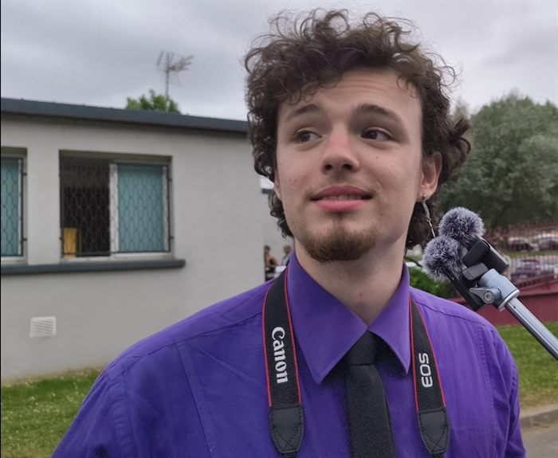
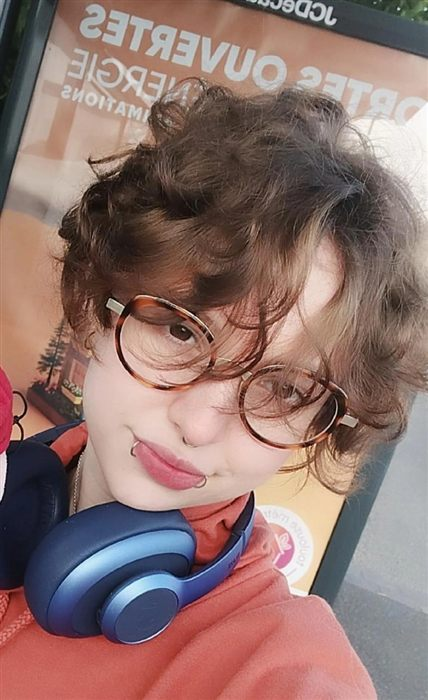
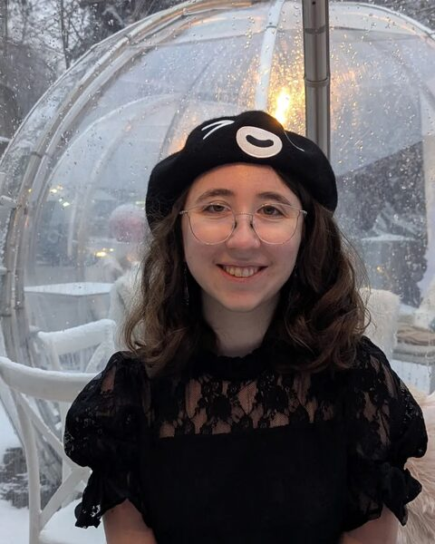
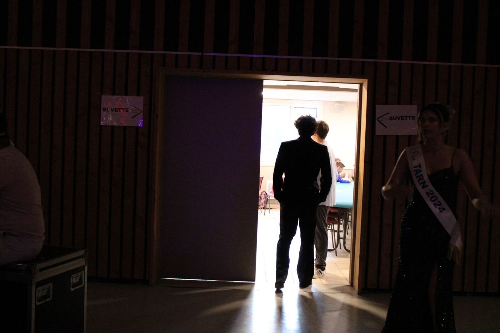
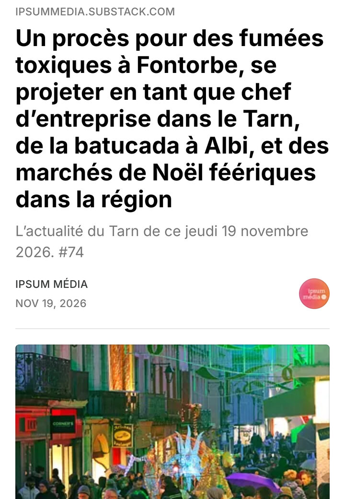
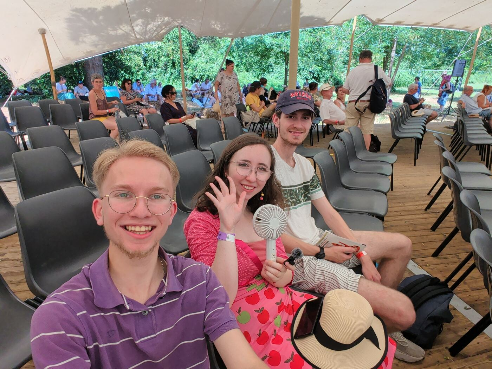
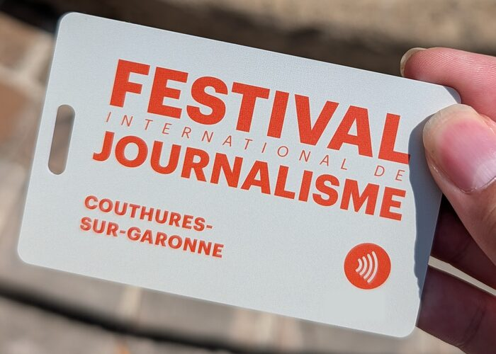
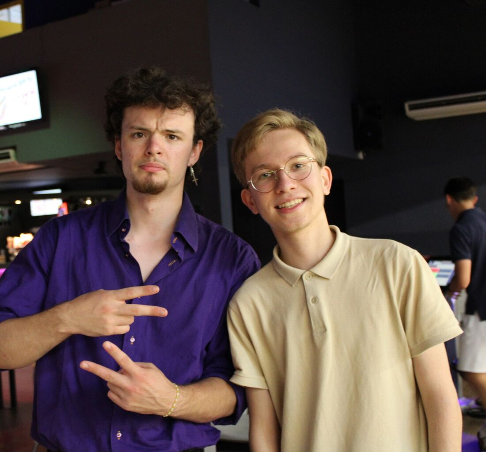

Un casting Miss Tarn
Un extrait de notre reportage, des coulisses du casting aux premières candidates.
À propos
Pas besoin d'être journaliste pour nous rejoindre. Pas besoin de diplôme. Pas besoin de carte de presse.




Des sujets très différents, une même aventure. On couvre l'actualité locale, la culture, le sport, l'économie, la société, l'environnement.
Un extrait de notre reportage, des coulisses du casting aux premières candidates.

On va là où ça se passe, et on raconte ce qui fait vivre le territoire.

Ateliers, immersions, interventions : ici, une visite du plateau de France 3.

Un événement vu de l'intérieur : on raconte aussi ce que le public ne voit pas.

Les articles de la semaine, les infos près de chez vous et les coulisses de la rédaction. Gratuit. Recevoir la newsletter →


À Couthures-sur-Garonne : des rencontres, des conférences et un métier qu'on découvre aussi en allant à sa rencontre.
Parce qu'un média local peut appartenir à celles et ceux qui le font, et rester libre.
Association loi 1901, sans actionnaire ni intérêt commercial ou politique à défendre. Utilité sociale avant profit.
Nos outils nous appartiennent : statistiques et supervision tournent déjà sur notre propre machine, et le reste suit.
Un média gratuit grâce à celles et ceux qui le soutiennent. Nous soutenir →
Tous âges, tous horizons, la même envie de raconter ce qui se passe près de chez soi. Chaque bénévole est formé et accompagné.
Étudiants, jeunes actifs, et des bénévoles bien plus âgés : l'âge médian est de 20 ans, mais l'équipe n'a pas d'âge.
Ici, on ne vient pas travailler pour un média : on le fait vivre ensemble.

Au plus près de la réalité : nos informations sont recoupées, puis relues par nos propres secrétaires de rédaction avant publication.
Nos sources sont sur le terrain, pas seulement derrière un communiqué.
Nous nous adaptons à chacun, y compris en situation de handicap.
Elle assiste (corrections, traductions, structuration), jamais pour écrire un article de zéro. Son usage est toujours signalé, et tout contenu généré est relu et vérifié. Lire notre charte IA →

Mairies, institutions, entreprises, associations, rencontres sur le terrain.
Un article est relu et validé avant d'être mis en ligne.
Rédacteurs, secrétaires de rédaction et rédacteurs en chef.
Son usage est signalé. Notre charte IA →
Quatre jeunes ont fondé Ipsum Média en juin 2024. Voici Tom et Simon, qui dirigent aujourd'hui l'association.
Président, rédacteur en chef
Étudiant en Sciences de l'information et de la communication à l'Institut Catholique de Toulouse, pour préparer un master en journalisme.
Trésorier, rédacteur
Étudiant en licence de Science Politique, option journalisme, à l'ESJ Lille.
Ipsum Média, c'est une équipe organisée autour de la rédaction, de la communication, de la vie associative et de la formation. Et une vingtaine de bénévoles de tous âges et de tous horizons. Envie de nous rejoindre ?
Les rédacteurs, les secrétaires de rédaction et les rédacteurs en chef d'Ipsum Média. Pour leur écrire, utilisez leur adresse ci-dessous.
Dans cette vidéo, Tom et Simon, les deux dirigeants, présentent le média, l'association et ce qu'on y fait au Club de la presse Occitanie, dont Ipsum Média est membre.

 La bande-annonce d'Ipsum Média
La bande-annonce d'Ipsum Média
Toutes nos missions bénévoles sont publiées sur la plateforme Je Veux Aider.
Un événement, une histoire, un problème dans votre commune, un sujet qu'on devrait traiter : racontez-nous. Une personne de la rédaction vous répond.